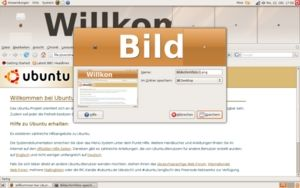

Problembehebung
Zum Verständnis dieses Artikels sind folgende Seiten hilfreich:
 Es kommt vor, dass bei der Installation von Ubuntu die Grafikkarte oder der Monitor nicht automatisch erkannt und passend konfiguriert werden. In diesem Fall kann z.B. die richtige Auflösung oder Bildwiederholrate nicht eingestellt werden. Um dies zu korrigieren, muss der XServer neu konfiguriert werden. Dazu gibt es generell zwei Wege:
Es kommt vor, dass bei der Installation von Ubuntu die Grafikkarte oder der Monitor nicht automatisch erkannt und passend konfiguriert werden. In diesem Fall kann z.B. die richtige Auflösung oder Bildwiederholrate nicht eingestellt werden. Um dies zu korrigieren, muss der XServer neu konfiguriert werden. Dazu gibt es generell zwei Wege:
eine dynamische Konfiguration über das Programm xrandr
eine statische Konfiguration durch Bearbeiten der Datei /etc/X11/xorg.conf von Hand
Beide Möglichkeiten haben ihre Vor- und Nachteile. Daher hängt es vom Einzelfall ab, für welchen Weg man sich entscheiden sollte. Generell gilt, dass man sich für den in diesem Artikel beschriebenen zweiten Weg nur dann entscheiden sollte, wenn
RandR bzw. das Programm xrandr nicht weiterhelfen
und man eine systemweite Lösung braucht
Zuerst sollte man aber immer ausprobieren, ob nicht eine Lösung mit den prinzipiell in allen Desktop-Umgebungen verfügbaren grafischen Werkzeugen möglich ist.
Sicherung der aktuellen Konfiguration¶
Prinzipiell sollte man vor dem Ändern von Konfigurationen immer eine Sicherheitskopie der entsprechenden Dateien machen. Wenn man die Situation verschlimmbessert hat, kopiert man die Sicherungskopie zurück und hat wieder einen funktionierenden XServer. Im Terminal [1] kann man eine Sicherheitskopie mit dem Befehl:
sudo cp /etc/X11/xorg.conf /etc/X11/xorg.conf.bak
erzeugen. Die /etc/X11/xorg.conf.bak ist also eine garantiert funktionierende Datei, die man bei Bedarf mittels
sudo cp /etc/X11/xorg.conf.bak /etc/X11/xorg.conf
wieder zurückkopieren kann.
Hinweis:
Der XServer funktioniert heutzutage auch ohne eine xorg.conf. Daher kann es sinnvoll sein, eine eigene Konfiguration mit dem Befehl:
sudo mv /etc/X11/xorg.conf /etc/X11/xorg.conf.bak
zu verschieben und damit aus dem Weg zu räumen, damit sich der XServer wieder automatisch einstellen kann.
XServer konfigurieren¶
Als zwingend nötiges Vorwissen sei an dieser Stelle auf die Grundlagen [2] und xorg.conf.d (für Eingabegeräte!) verwiesen. Dort findet man auch ein Beispiel bzw. Grundgerüst, dass als Vorlage für eigene Erweiterungen dienen kann.
Zum Bearbeiten der Datei /etc/X11/xorg.conf kann ein beliebiger Editor [3] verwendet werden, der allerdings immer mit Root-Rechten [4] gestartet werden muss.
Hat man die Konfiguration abgeschlossen, muss der XServer neu gestartet werden. Gibt es beim Start Probleme, so kann man unter /var/log/Xorg.0.log das automatisch erstellte Protokoll einsehen.
Zwei Monitore¶
Im Abschnitt Section "Device" werden die Bezeichnungen (Identifier) der angeschlossenen Monitore eingetragen. Dabei muss jeder Monitor einem Anschluss der Grafikkarte zugewiesen werden. Die Namen dieser Anschlüsse können mit dem Befehl xrandr ermittelt werden.
Hier ein Beispiel für ein Notebook, an das ein externer Monitor angeschlossen ist. LVDS ist der interne Anschluss, VGA der analoge Anschluss für einen externen Monitor, der über einen DSUB-Stecker angeschlossen ist. Die Identifier Internes Display und Externer Monitor können frei gewählt werden und beziehen sich auf die Monitor-Sections, die so aussehen kann:
Section "Device"
Identifier "Meine Grafikkarte"
...
Option "Monitor-LVDS" "Internes Display"
Option "Monitor-VGA" "Externer Monitor"
EndSection
Section "Monitor"
Identifier "Internes Display"
EndSection
Section "Monitor"
Identifier "Externer Monitor"
Option "RightOf" "Internes Display"
EndSection
Section "Screen"
Identifier "Default Screen"
Monitor "Internes Display"
...
SubSection "Display"
Virtual 3200 1200
EndSubSection
EndSectionIn den Monitor-Sections lassen sich weitere Konfigurationen für die Monitore vornehmen. Einer der beiden Monitore (in diesem Fall der externe) wird so konfiguriert, dass er den Desktop erweitert (RightOf).
Virtuelle Auflösung¶
Da ein erweiterter Desktop wie ein einziger großer (virtueller) Bildschirm behandelt wird, wird zusätzlich die "gemeinsame" Auflösung über Virtual x y angegeben. Diese Grafik  erläutert diesen Zusammenhang. Beispiele:
erläutert diesen Zusammenhang. Beispiele:
Virtual 2560 1024: zwei Monitore mit der Auflösung 1280x1024 nebeneinander (1280+1280x1024)Virtual 1280 2048: zwei Monitore mit der Auflösung 1280x1024 übereinander (1280x1024+1024)
In der Praxis darf man auch höhere (als die errechneten) Werte verwenden - falls die Grafikkarte deswegen aussteigt, erfolgt eine entsprechende Rückmeldung.
Zwei Grafikkarten, zwei Monitore¶
Diese Kombination kann sehr schwierig zu konfigurieren sein (Stichworte: Xinerama, MultiSeat). Einfacher ist es, eine Grafikkarte mit mehreren Monitor-Ausgängen zu verwenden.
Keine EDID-Informationen¶
Stellt ein Bildschirm keine oder falsche EDID-Informationen zur Verfügung, muss jeder Automatismus zur Erkennung und automatischen Konfiguration des Monitors scheitern. Dies wird in der Protokolldatei /var/log/kern.log wie folgt vermerkt:
[ 0.298125] BIOS EDD facility v0.16 2004-Jun-25, 0 devices found [ 0.298127] EDD information not available.
Es gibt zwei Varianten, um die erforderlichen Bildschirmparameter anzugeben:
RandR (im laufenden Betrieb bzw. dynamisch)
Bildschirmauflösung (statisch)
Beispiel¶

Die Schrift (im Anmeldebildschirm) ist viel zu groß/klein, obwohl die Einstellungen unter "Einstellungen -> Erscheinungsbild -> Schriftarten" in Ordnung sind. Weiterhin liefert der Befehl
xdpyinfo | grep resolution
völlig absurde Werte. Anschließend öffnet man sie mit Root-Rechten zum Bearbeiten und sucht die Sektion Device der Grafikkarte heraus. Hier fügt man die Option "UseEdidFreqs" "no" (früher wurde auch "NoDDC" "1" verwendet) ein, so dass es am Ende so aussieht:
Section "Device"
...
Option "UseEdidFreqs" "no"
EndSectionUm die Änderungen zu testen, muss man den X-Server neu starten. Da mit der Option verhindert wird, dass die Grafikkarte Informationen über den angeschlossenen Monitor automatisch ermittelt, muss man die Auflösung und andere Parameter des Bildschirms von Hand einstellen (siehe oben).
Framebuffer zu klein¶
Falls man einen zweiten Monitor im laufenden Betrieb anschließt, kann es passieren, dass xrandr nicht die richtige Auflösung erkennen kann. Das liegt daran, dass der Framebuffer, der beim Start von X initialisiert wird, nur die Größe hat, die alle in diesem Moment angeschlossenen Monitore benötigen.
Hat man z.B. beim Rechnerstart nur einen Monitor mit einer Auflösung von 1024x768 angeschlossen und schließt einen zweiten Monitor mit einer Auflösung von 1280x1024 an, kann xrandr nur maximal eine Auflösung von 1024x768 einstellen (für beide Monitore!). Wenn man weiß, was für eine Auflösung man maximal benötigt, kann man diese manuell eintragen. Um eine maximale Auflösung von 2304x1024 (1024+1280x1024) anzeigen zu können, muss der Eintrag Virtual ergänzt werden. Beispiel:
Section "Screen" (...) SubSection "Display" (...) Virtual 2304 2048 EndSubSection EndSection
Wenn vom System keine xorg.conf angelegt wurde (weil sie nicht mehr zwingend notwendig ist), dann kann man sie mit folgender Grundkonfiguration anlegen:
Section "Device"
Identifier "Configured Video Device"
EndSection
Section "Monitor"
Identifier "Configured Monitor"
EndSection
Section "Screen"
Identifier "Default Screen"
Monitor "Configured Monitor"
Device "Configured Video Device"
SubSection "Display"
Virtual X Y
EndSubSection
EndSectionHinweis:
Bei bestimmten virtuellen Auflösungen läuft Compiz nicht mehr richtig und sollte dann deaktiviert werden.
Rotation funktioniert nicht¶
Um den Bildschirm mittels xrandr bei NVidia-Karten mit dem proprietären Treiber nvidia rotieren zu können, muss die Option "RandRRotation" aktiviert werden:
Section "Device" (...) Driver "nvidia" Option "RandRRotation" "True" (...) EndSection
Nach einem Neustart des XServers oder des Rechners kann man nun den Bildschirm mittels
xrandr -o Orientierung
rotieren.
Problembehebung¶
xorg.conf¶
Probleme im Zusammenhang mit Randr kann unter Umständen eine bereits bestehende /etc/X11/xorg.conf bereiten. Einstellungen, die RandR selbst ermitteln kann, sollten nicht (mehr) eingetragen werden. Beispiele:
doppelte Einträge für "Device" und "Screen"
Auflösungen (Modes) in der "Display"-Subsection
HorizSync- und VertRefresh-Einstellungen
"MonitorLayout"-Sections
 Übersichtsartikel
Übersichtsartikel- Erstellt mit Inyoka
-
 2004 – 2017 ubuntuusers.de • Einige Rechte vorbehalten
2004 – 2017 ubuntuusers.de • Einige Rechte vorbehalten
Lizenz • Kontakt • Datenschutz • Impressum • Serverstatus -
Serverhousing gespendet von